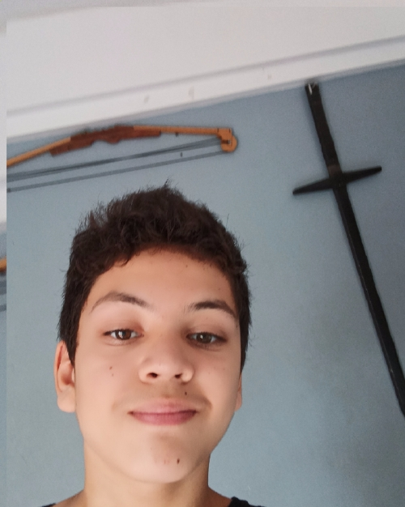

El hobby que más importancia tiene en mi vida es, taekwondo y le dedico bastante tiempo. Una vez asistí a un torneo de taekwondo de 3 especialidades:
combate, salto en alto y forma(un conjunto de movimientos ordenados que simula un combate), y gane el oro, en combate y salto en alto, cosa que no es poco.

Hace 2 meses mi papá me sugirió hacer esto y
lo empecé a hacer porque me convenció de que conviene estudiar como para tener hacer,
mientras espero que empiecen las clases.
Empece a estudiar programación para tener algo que hacer en vacaciones.
Tengo 12 años y terminé la primaria.
el hobby que mas importancia tiene en mi vida es, taekwondo y le dedico bastante tiempo.
una vez asisti a un torneo de taekwondo de 3 especialidades: combate, salto en alto y forma(un conjunto de movimientos ordenados que simula un combate), y gane el oro,
en combate y salto en alto, cosa que no es poco.
experiencia laboral:nula, tengo 12 años lo raro seria que si tenga experiencia
mi educacion;
termine la primaria logrando pasar a la secundaria privada i.s.m.a(instituto santa maria de los angeles) y voy a ingles particular, para mejorar mi ingles,
que es un importante idioma.
Para el Halloween de 2022 hice una armadura de samurái en cartón, por lo que otro hobby es hacer armaduras de cartón, la pinte y todo
Uno de mis hobbys que más tiempo me consume es dibujar
Suelo dibujar dibujos que ya hice pero mejores ó diseñar algún dibujo para matar el tiempo, si tendría que calificar mis habilidades como artista me daría un 8,5/10 la honestamente.
Otro hobby que tengo es jugar con espadas, en la foto de más arriba se puede ver una de esas espadas,
Que hago junto a mi papá artesanalmente, normalmente juego a las espadas solo o con mi hermana.
otro hobby que tengo aparte de los otros es jugar videojuegos, todo tipo de videojuegos, desde videojuegos de celular populares, hasta juegos de pc que nadie conoce.